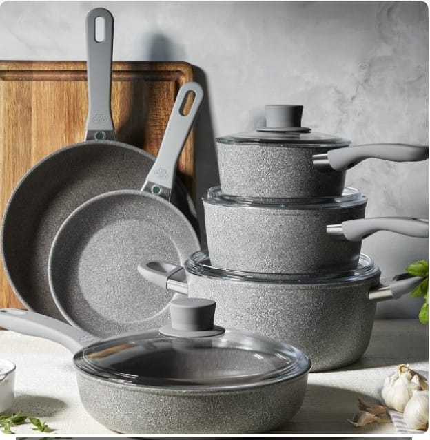

Estás a punto de descubrir una nueva forma de preparar tus alimentos. Cocinar con ollas Sibling ahora será más fácil, más rápido, más económico, ecológico y más rico!! Porque hay un producto para cada necesidad, hay una Sibling para cada familia… y al mejor precio!
